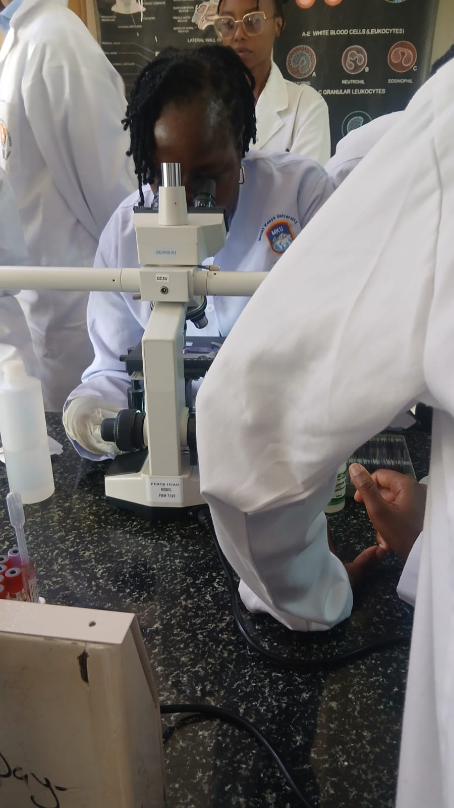
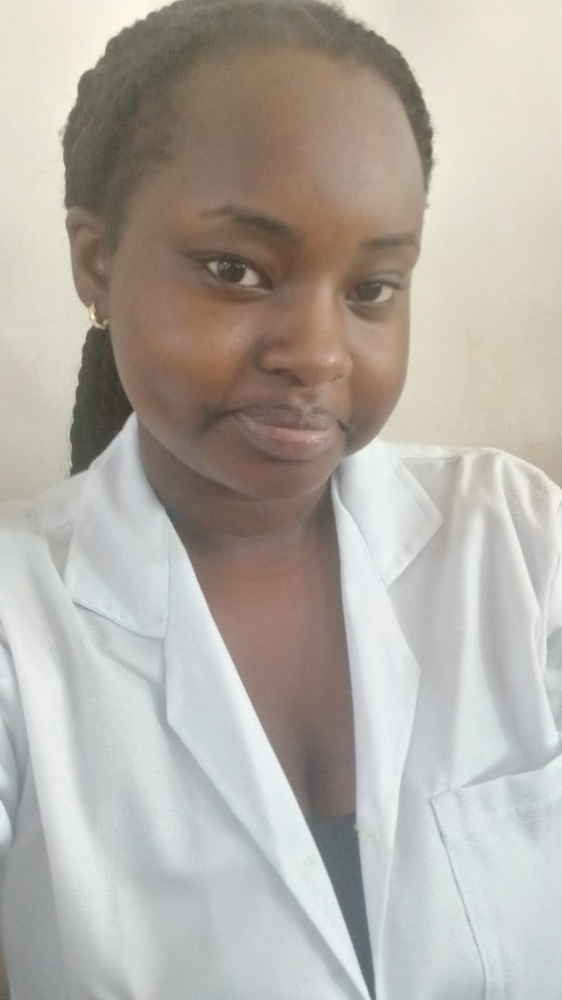
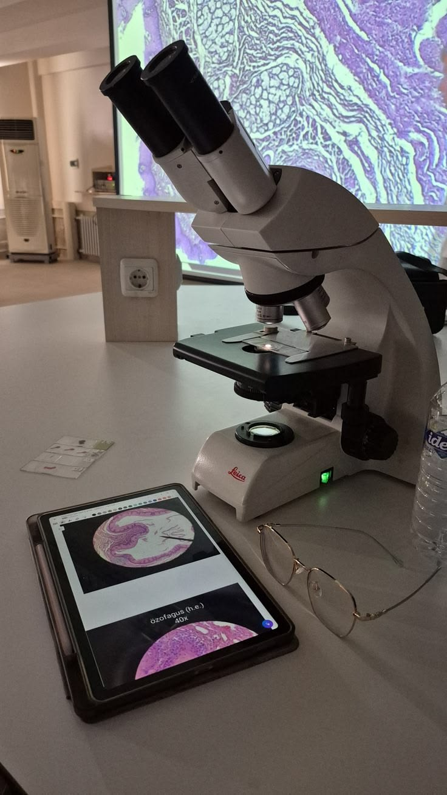
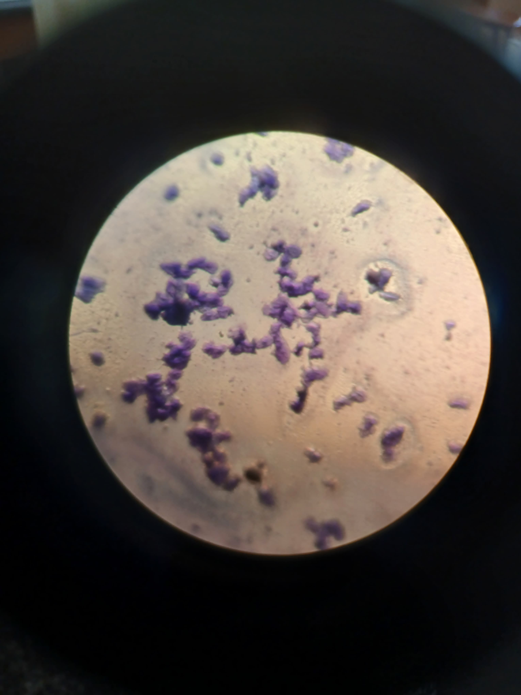
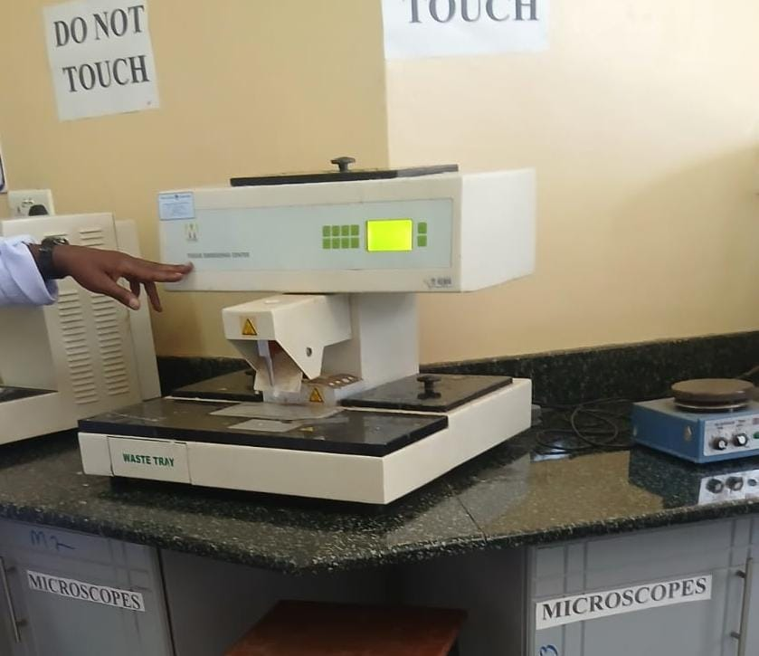

Haematology
Exploring blood, blood-forming organs and the investigation of blood-related conditions.
↗An aspiring medical laboratory professional passionate about scientific discovery, diagnostic excellence and the science that makes better healthcare possible.

Beyond the laboratory, there is a passion for discovery, learning and understanding the science of life.

I am Daniella Gesare Kiriago, a second-year Medical Laboratory Science student at Mount Kenya University.
My academic journey is driven by an interest in understanding the human body, exploring diagnostic science and appreciating the important role laboratory investigations play in healthcare.
I believe that behind every laboratory investigation is an opportunity to discover, understand and contribute to better patient care.
As I continue my studies, I look forward to expanding my scientific knowledge, developing practical laboratory skills and growing into a competent medical laboratory professional.

MICROSCOPY
BACTERIOLOGY
LABORATORY SCIENCEAn introduction to the scientific disciplines and laboratory competencies shaping my academic journey.
Exploring blood, blood-forming organs and the investigation of blood-related conditions.
↗Studying microorganisms and their relationship with infectious diseases and human health.
↗Understanding biochemical investigations and the analysis of chemical components in biological samples.
↗Exploring the microscopic examination of tissues and cells to understand their structure and function.
↗Studying the immune system, immune responses and their importance in disease investigation.
↗Exploring parasites, their life cycles and their significance in human disease diagnosis.
↗Building practical knowledge and laboratory awareness through academic learning and guided practice.
Microscopy and slide observation
↗Specimen handling and preparation
↗Laboratory safety and hygiene
↗Laboratory equipment familiarisation
↗Quality assurance awareness
↗Every stage of education contributes to a deeper understanding of science, healthcare and professional growth.
My academic journey at Mount Kenya University is helping me develop the knowledge, discipline and scientific perspective needed in medical laboratory practice.
Currently in Year Two, developing an academic foundation in medical laboratory science and exploring the scientific principles behind diagnostic investigations.
IN PROGRESSWorking towards strengthening laboratory knowledge, practical awareness, analytical thinking and professional responsibility.
ONGOING DEVELOPMENTAspiring to contribute to quality diagnostic services through scientific knowledge, accuracy, ethical practice and continuous professional development.
FUTURE GOALAn evolving record of practical learning, laboratory exposure and the skills developed throughout my academic journey.
This section will showcase my laboratory practical sessions, techniques and experiences as I continue developing my skills in Medical Laboratory Science.
Practical experience and techniques to be added following confirmation of completed laboratory sessions.
DETAILS TO BE UPDATEDRelevant specimen collection, preparation and handling experience to be documented here.
DETAILS TO BE UPDATEDVerified laboratory procedures, equipment familiarisation and practical competencies to be documented here.
DETAILS TO BE UPDATEDI welcome opportunities to learn, collaborate and grow within the field of Medical Laboratory Science.
Mount Kenya University
Medical Laboratory Science